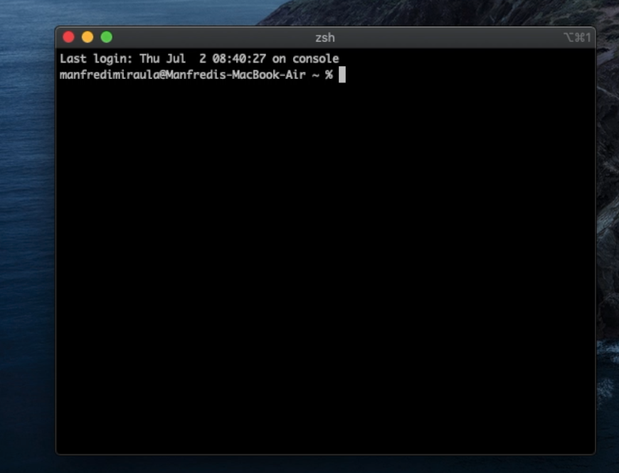
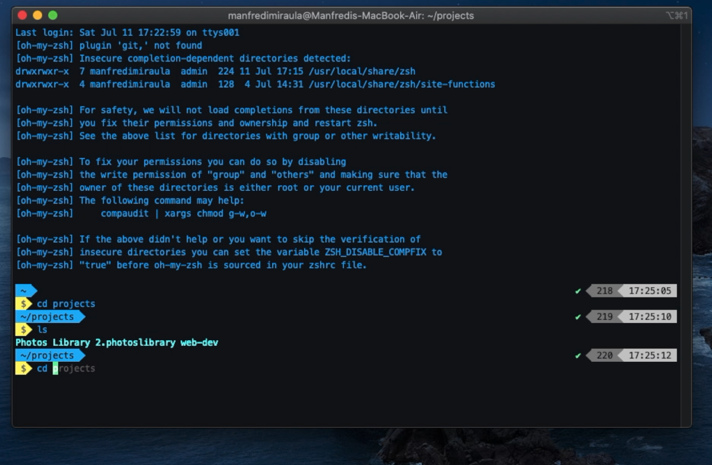

Installing Python in less than 9999 steps!
Yes, this is yet another Python installation guide. However, it is different from most as I verified the steps and it should run smoothly without errors when you have a clean OS installation. I’ve used MacOS Catalina freshly installed.
How this is going to work? I’m going to give you the sequence of steps that you need to run to install Python, the virtual environment manager, Jupyter notebook and Oh My Zsh. Starting from a basic terminal …

The Vanilla version of iTerm2You will obtain a poweruser terminal similar to this

The poweruser version of iTerm2If you are more of a visual person like I am, you can follow the video tutorial shows how to change and modify iTerm.
How to install python in less than 9999 steps
To run the commands, you can copy directly the line after the “$” into your terminal.
$ xcode-select --install
$ ruby -e "$(curl -fsSL https://raw.githubusercontent.com/Homebrew/install/master/install)"
$ brew install python
$ brew install pyenv
$ echo 'eval "$(pyenv init -)"' >> .bash_profile
$ echo 'export PYENV_ROOT="$HOME/.pyenv"' >> ~/.zshrc
$ echo 'export PATH="$PYENV_ROOT/bin:$PATH"' >> ~/.zshrc
$ echo -e 'if command -v pyenv 1>/dev/null 2>&1; then\n eval "$(pyenv init -)"\nfi' >> ~/.zshrc
$ brew install zlib sqlite
$ export LDFLAGS="-L/usr/local/opt/zlib/lib -L/usr/local/opt/sqlite/lib"
$ export CPPFLAGS="-I/usr/local/opt/zlib/include -I/usr/local/opt/sqlite/include"
-- here you can choose the Python version you want to install
$ pyenv install 3.7.7
$ pyenv global 3.7.7
$ brew install pyenv-virtualenvwrapper
-- no, it's not an error... keep the "$" while copying the command line
$ $(pyenv which python3) -m pip install virtualenvwrapper
$ echo 'export WORKON_HOME=~/.virtualenvs' >> .zshrc
$ echo 'mkdir -p $WORKON_HOME' >> .zshrc
$ echo '. ~/.pyenv/versions/3.7.7/bin/virtualenvwrapper.sh' >> .zshrc
Basic virtual environment commands
You now have a working virtual environments ready to use. To create and activate a new virtual environment:
here change [the_name_of_your_project] with the name of the folder in which you want to start your project
$ mkdir [the_name_of_your_project]
$ cd [the_name_of_your_project]
$ mkvirtualenv $(basename $(pwd))
The last command creates a virtual environment with the name of the folder you are in and activates it. Once you are finished use
$ deactivate
If you want to check which environment you have create or swap between virtual environments you can use the command
$ workon
$ workon [the_name_of_my_virtual_environment]
Prettyfiyng iTerm
iTerm is a more flexible and powerful Terminal than the one that comes out-of-the-box with MacOS. The following commands and steps will give you access to a beautiful and yet useful iTerm that hopefully will enhance your efficiency. If you want to follow the video guide, you can find this section at minute 7.25 [video link]
$ brew cask install iterm2
$ brew install zsh zsh-completions
$ sh -c "$(curl -fsSL https://raw.github.com/robbyrussell/oh-my-zsh/master/tools/install.sh)"
$ git clone https://github.com/bhilburn/powerlevel9k.git ~/.oh-my-zsh/custom/themes/powerlevel9k
$ git clone https://github.com/zsh-users/zsh-autosuggestions $ZSH_CUSTOM/plugins/zsh-autosuggestions
$ brew install zsh-syntax-highlighting
Visit iterm2colorschemes and pick your favourite colour scheme. To install
iTerm → Preferences → Profiles → Colors → Color presets → Import → import the file you downloaded
Color presets → the_file_you_downloaded
Visit github.com/powerline/fonts to choose your favourite font. I’m using “Meslo Slashed” for this tutorial. To download the file click “View Raw”.
iTerm2 → Preferences → Profiles → Text → Change Font
Configuring iTerm plugins
To activate and configure all the plugins we installed at the beginning, we need to tinker with the configuration file. Follow the steps below to finalise the prettification!
Open the config file via terminal
$ open ~/.zshrc
Add the following lines to the file
- Search for the string “ZSH_THEME = …” and modify the line with “ZSH_THEME=”powerlevel9k/powerlevel9k”
- Search for the string plugins = (…) and add “zsh-autosuggestions” within parenthesis
- At the end of the config file add the following lines
- POWERLEVEL9K_LEFT_PROMPT_ELEMENTS=(dir rbenv vcs)
- POWERLEVEL9K_RIGHT_PROMPT_ELEMENTS=(status root_indicator background_jobs history time)
- POWERLEVEL9K_PROMPT_ON_NEWLINE=true
- POWERLEVEL9K_MULTILINE_FIRST_PROMPT_PREFIX=”%f”
- POWERLEVEL9K_PROMPT_ADD_NEWLINE=true
- POWERLEVEL9K_VCS_MODIFIED_BACKGROUND=’red’
- source /usr/local/share/zsh-syntax-highlighting/zsh-syntax-highlighting.zsh
Useful resources
xcode
Xcode is a fundamental developing tool for developers on Mac. Not much to add here, it is a requirement if you want to write code on your Mac
Homebrew
Homebrew is a package manager and personally my preferred way to install packages on a Mac. Whenever I want to explore a new python tool or a new language (e.g. ruby, node, etc.) I tend to search for installations that use Homebrew because it does the heavy lifting for us.
Pyenv and virtualenv wrapper
Pyenv and virtualenv wrapper are two tools that work hand-in-hand to create version controlled environments for Python. By using them, we can safely initialize multiple Python environments that work independently, without impacting the MacOS Python system.
You can learn more about Pyenv here. For more information regarding virtualenvwrapper head here:
Echo commands
Echo commands are used to print text output and/or write text in a file. In fact, we used this command to modify the .zshrc when we installed Python. These commands are used to set the correct PATH to our user installed Python version and link our terminal so that it knows that when we call the Python environments it needs to use the one we installed, rather than the MacOS one.
Resources for iTerm
- Additional user-defined iTerm configuration
- Additional configuration can be added by modifying the config file $ open ~/.zshrc
- Additional Powerlevel9k configuration and attributes []
If you find this article useful, leave a comment. I’d love to get in touch and discuss what other type of content you might be interested in!